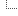

| Voice Authentication Database |
|
| Voice Authentication Database |
|
| Instructions |
|
UASR feature vector files can be created using the DB.xtp tool:
cd $UASR_HOME-data/vau DB.xtp <featype> common/info/featureanalysis.cfg [-v2] [-c] [-n]
| Options: | -v2 |
More screen protocol |
-c |
Use colors for screen protocol | |
-n |
Do not write any files | |
| more options... |
<featype> stands for the type of features to be
computed:
<featype> |
Description |
|---|---|
| pfv | Primary feature vectors (default: 30 channel mel-scaled filter bank) |
| sfv | (Most significant) secondary feature vectors (Primary+Delta+Delta-Delta+PCA) |
| lfv | Least significant secondary feature vectors |
| rnd | Random feature vectors1) |
| 1) | For algorithm testing: There is nothing to be learned from random features, so the recognition rate can neither be significantly greater nor significantly less than 1/#speakers. |
The tool generates ASCII files which contain one feature vector per line.
All files will be stored in $UASR_HOME-data/vau/common/fea/<featype>_<feadim>,
where <feadim> denotes the feature space dimension.
You can also use any other tools to create feature vector files as long as they conform to the described ASCII format and will be properly located in the UASR database structure.
Important: See existing database structure before creating an experiment.
Create project and experiment folders in directory GMM/flists and GMM/info.
Include [project.name]_[exp.name]_train.flst and [project.name]_[exp.name]_test.flst with
training and test data in GMM/flists/[project.name]/[exp.name] directory.
Create configuration files [project.name]_[exp.name]_[fea]_[feaDim].cfg and
[project.name]_[exp.name]_test.cfg in GMM/info/[project.name]/[exp.name].
[project.name]_[exp.name]_[fea]_[feaDim].cfg contains references to associated experiment folder and feature directory.
File also includes references to feature and default configuration file in GMM/info.
Finally there is an GMM/info/[project.name]/[exp.name]/[project.name]_[exp.name]_test.cfg reference.
[project.name]_[exp.name]_test.cfg contain train file list and test file list includes. Use UASR Keys uasr.flist.train and uasr.flist.test.
Important: Before running the classifier you must compute feature vector files.
The GMM training and classification is performed by the HMM.xtp tool:
cd $UASR_HOME-data/vau HMM.xtp trn GMM/info/<featype>_<datasets>.cfg [-v2] [-c] [-n] [-Pskip=<flags>]
| Options: | -v2 |
More screen protocol |
-c |
Use colors for screen protocol | |
-n |
Do not write any files | |
-Pskip=ET |
Do the training only | |
-Pskip=SUIT |
Do the classification only | |
| more options... |
Models and log files will be stored in $UASR_HOME-data/vau/GMM_<featype>_<datasets>. Use
the -v2 option for a detailed recognition log including
per-turn classification results and neglog likelihoods.
The passphrase recognizer needs a finite state dialog and grammar to
work. The pre-configured dialog and grammer definition is located in
$UASR_HOME-data/vau/common/model/vau.dlg.txt. See sections
Writing Grammar Files and Writing Dialog Files in the UASR manual for information on
how to customize this file. The grammar and dialog file is compiled
by the REC_PACKDATA.xtp tool:
cd $UASR_HOME-data/vau HMM.xtp dlg common/info/ASR.cfg [-v2] [-c] [-n]
| Options: | -v2 |
More screen protocol |
-c |
Use colors for screen protocol | |
-n |
Do not write any files | |
| more options... |
ASR.cfg configures REC_PACKDATA.xtp to handle
the following files (all in $UASR_HOME-data/vau/common/model):
| File | Descroption | Access |
|---|---|---|
vau.dlg.txt |
Voice authentication dialog and grammar | read |
<HMMID>.hmm |
Phoneme HMMs | read |
feainfo.object |
Acoustic feature information | read |
<HMMID>.gmm |
Gaussian mixture models for recognition networks | write |
sesinfo.object |
Recognizer session information (includes recognition networks) | write |
dialog.fst |
Dialog state machine | write |
There are two options:
ASR.xtp tool: cd $UASR_HOME-data/vau dlabpro $UASR_HOME/incubator/ASR.xtp common/info/ASR.cfg -v2Please note that as of UASR version 179C3EF9E4 the recognizer confidence computation is broken. You cannot rely on the confidence values.
recognizer(.exe) tool:
cd $UASR_HOME-data/vau/common/sig1) recognizer -cfg ../info/recognizer.cfg ../flists/<filelist>.flst2)
| 1) | You must change to the signal folder
as the file list entries are relative and the recognizer tool does not understand the UASR database
structure. |
| 2) | The file extension of a file list must be .flst! |
| Database Structure |
|
| UASR-data | UASR database home directory 1) |
|  vau | |